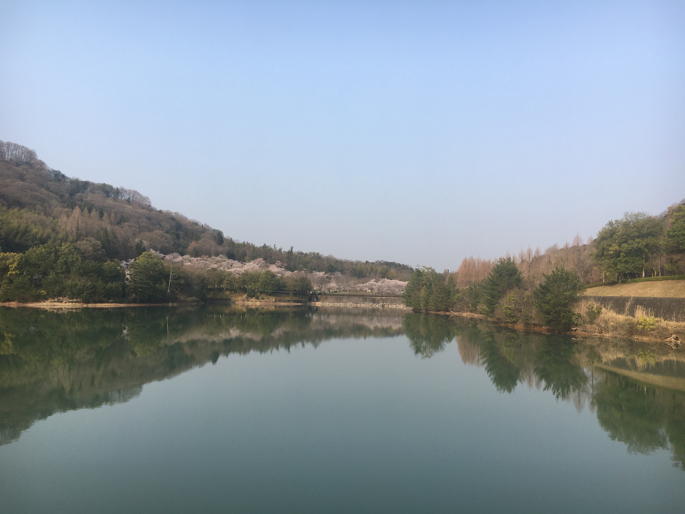

上一章
今天带大家看樱花时期的镜山，这是西条首屈一指的赏樱圣地。赏樱时正值新学年开始，很多时候镜山赏樱是迎新活动
这几张灯光昏暗的是我早上上班时拍的，当时很清静，一个人静静赏樱。





2020年3月31日疫情爆发初期和教会的朋友来赏樱了。这个时候，除了学生还有很多家长带孩子来的。周末还有活动(イベント)，还有夜游。

蓝色垫子(ブルーシート)是教会的，食物也是教会赞助。


下一章
上一章
今天带大家看樱花时期的镜山，这是西条首屈一指的赏樱圣地。赏樱时正值新学年开始，很多时候镜山赏樱是迎新活动
下一章